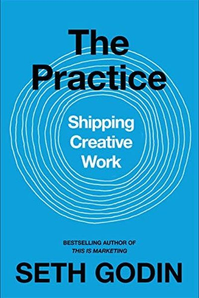

Library › Creativity
The Practice: Shipping Creative Work — Summary & Key Lessons

Seth Godin's daily creed: creativity is not a talent you wait for — it is a practice you show up to.
📖 OPEN THE FULL INTERACTIVE BREAKDOWN →🌐 Read it in Hindi, Hinglish, Gujarati, Tamil & 22 more languages — free, with audio.
💡 The Big Idea
Godin — author of 20 bestsellers and the most prolific blogger alive — reframes creativity as a practice, like yoga or sport: something you do daily, not a gift you wait for. The enemy is the 'lizard brain' that wants safety and approval. The cure is shipping: making art that is generous, risky and novel, and putting it into the world where it can help people. Volume beats brilliance; persistence beats talent.
🧠 The 5 Key Lessons
Lesson 1: Creativity Is a Practice, Not a Talent
The Practice
Godin dismantles the 'talent myth': creativity is not a bolt of lightning gifted to the chosen few — it is a practice, a daily discipline like brushing your teeth. You don't wait to feel like practicing; you practice, and the feeling follows. The artist is not someone with more talent; the artist is someone who keeps showing up.
📖 Example: Godin has published a blog post every single day for more than a decade — good days and bad days, travel days and sick days. The volume itself became his advantage: thousands of reps of shipping. Read the full example →
⚡ Do this: Choose your form (writing, designing, recording, coding) and commit to a daily minimum — one paragraph, one sketch, one rep. Protect the streak.
Lesson 2: The Lizard Brain Is Not Your Boss
The Resistance
The lizard brain — the oldest, fear-driven part of you — hates risk, criticism and uncertainty, which is exactly what creative work is made of. It whispers 'wait,' 'not good enough,' 'they'll laugh.' Godin's instruction is simple: the lizard brain gets a vote, not a veto. Acknowledge the fear and ship anyway.
📖 Example: Musicians, writers and startup founders Godin works with all report the same inner voice before launching anything. The ones who succeed have not silenced it — they have learned to hear it and move anyway, like a tennis player's stage fright between points. Read the full example →
⚡ Do this: Name the fear that's blocking your current project ('it will be judged'). Then ship one small piece of it publicly — a draft, a demo, a post.
Lesson 3: The Muse Is Boring
Showing Up
Waiting for inspiration is a trap — the 'muse' rewards boring, consistent attendance. Godin's model: creativity is a slot machine; you pull the lever daily, and the wins come from volume. Most breakthroughs arrive in the middle of ordinary sessions, not in dramatic flashes of genius.
📖 Example: Godin compares the practice to a daily newspaper column: some days are gems, most days are solid, a few are duds — but the audience stays because the column always arrives. Consistency builds trust; trust builds an audience. Read the full example →
⚡ Do this: Set a non-negotiable 'butt in chair' time daily. Same hour, same place, tiny output quota. Inspiration will learn your schedule.
Lesson 4: Ship It: Art That Doesn't Reach People Is a Hobby
Shipping
Unshared work is not art — it is a hobby. Shipping means putting your work where it can be seen, used and judged: published, posted, sold, performed. Shipping is frightening because it invites criticism, and criticism is how the lizard brain keeps you small. But shipping is also the only way your work can help anyone.
📖 Example: The famous 'TED talk about the refrigerator' — Godin's 'somebody should make this' idea — became a thing because he made the prototype, shipped it, and told the story. Ideas that ship get better; ideas that hide die. Read the full example →
⚡ Do this: Pick one finished-but-unshared project and give it a public deadline this week. Announce the deadline to one person who'll hold you to it.
Lesson 5: Small Is Big: The Power of Tiny
Scale
You do not need a million followers or a masterpiece. Godin's 'smallest viable audience' idea: make work for the smallest group that truly needs it, and delight them completely. Tiny audiences compound — and tiny consistent outputs beat rare mega-projects because only shipping creates trust.
📖 Example: Godin points to niche creators — the YouTuber for 5,000 model-train fans, the newsletter read by 800 specialists — who thrive while generic 'mass appeal' accounts starve. Small and specific beats big and vague. Read the full example →
⚡ Do this: Define the smallest group that would genuinely love your work. Make your next piece specifically for them, and tell them directly.
✅ 5-Step Action Plan
- Commit to a daily minimum creative output — one paragraph, one sketch.
- Give the lizard brain a vote, never a veto: name the fear, ship anyway.
- Set a fixed 'studio hour' daily and treat it as non-negotiable.
- Give one stalled project a public shipping deadline this week.
- Define your smallest viable audience and make the next piece for them.
⚠️ When This Doesn't Work
Pressfield's 'ship the work' is the essential creative commandment — and Kozmo is its cautionary tale: the company shipped relentlessly — 1-hour delivery across nine cities, a brilliant product, a decade ahead of its time — and died because shipping the work is not the same as shipping a business. Kozmo's founders were the most productive shippers of their generation; they shipped themselves straight into bankruptcy when the economics of each delivery were structurally impossible. Ship the work, yes — and ship the spreadsheet.
💀 The Graveyard Proves It
🚲 Kozmo.com — Free 1-Hour Delivery of a Single Candy Bar. Burn: $280M. Read the full case study →
💬 Best Quotes from The Practice: Shipping Creative Work
- “Creative work is not a selfish act — it's a generous one.”
- “The work is the practice. The practice is the work.”
- “Shipping is the work. Everything else is a hobby.”
Interactive version: mark lessons as read, listen in your language, share quote cards.